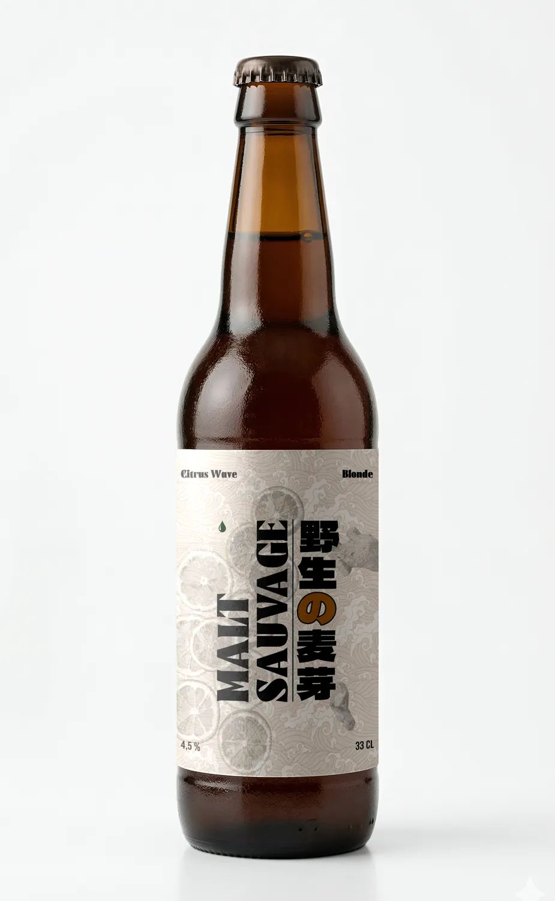
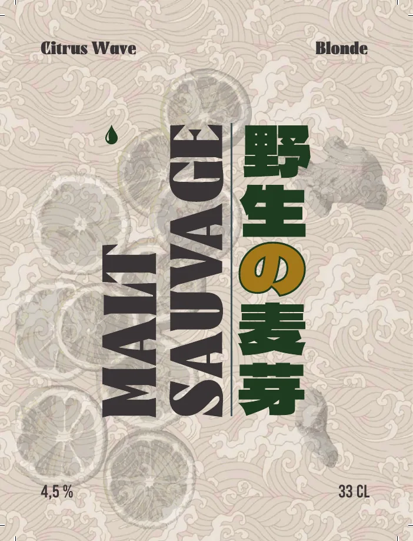
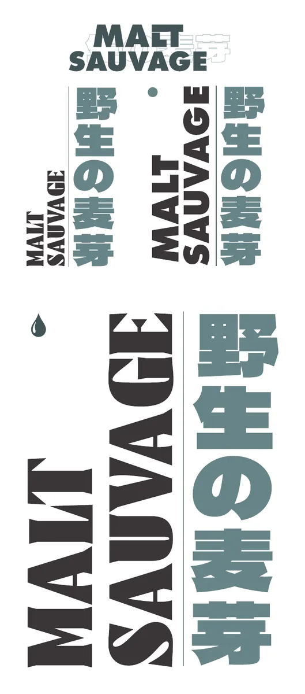

← Projets/Packaging & identité/Malt Sauvage
Malt Sauvage
Choisis ta bière3 goûts · 1 gamme


Identité & charteClic = plein écran · ← → pour naviguer

PaletteClic pour copier
Astuce : ← → pour passer d'un projet à l'autre